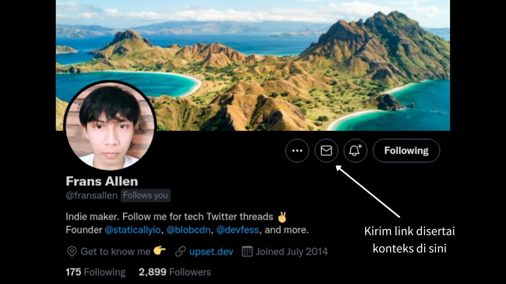

Tentang
Viral Darurat adalah sebuah Viral as a Service (VaaS) independen pertama di Indonesia yang menghubungkan informasi dari masyarakat ke media berita dan penggiat teknologi. Kamu dapat menggunakan layanan ini untuk meneruskan informasi yang memerlukan perhatian banyak orang.
Layanan Viral Darurat mengumpulkan kontak dari redaksi media berita, akademisi, dan penggiat teknologi di Indonesia yang berpotensi membantu menyebarkan informasi. Saat ini Viral Darurat terhubung dengan kotak masuk dari 40+ media berita, 5 akademisi, dan 5 public figure.
Apabila Kamu adalah jurnalis, akademisi, penggiat teknologi, atau public figure, Kamu dapat secara mudah mendapatkan informasi-informasi ini dengan cara Subscribe pada Newsletter di akun Twitter @fransallen.
Contoh kasus yang dapat diterima tapi tidak terbatas pada: kebocoran data, upaya pengamanan data pribadi, arogansi admin media sosial Instansi Pemerintah, kekerasan seksual, eksploitasi karyawan magang, dan kasus-kasus lain yang berhak mendapat perhatian khusus dari semua orang.
Cara Pakai
1. Kirim informasi
Informasi dapat berupa utas di Twitter atau pos di Facebook yang membicarakan isu yang memerlukan perhatian banyak orang. Link dapat dikirimkan melalui DM akun Twitter @fransallen. Lihat contoh di sini.
2. Tahap peninjauan
Setelah Kamu mengirimkan link dengan disertai konteks, kami akan meninjau apakah informasi ini relevan dan perlu diteruskan untuk disebarkan.
3. Informasi disetujui
Kami akan memberitahu Kamu apabila informasi yang Kamu kirimkan disetujui sebelum diteruskan ke media berita, kami juga akan mengkonfirmasi beberapa hal yang diperlukan apabila informasi belum lengkap.